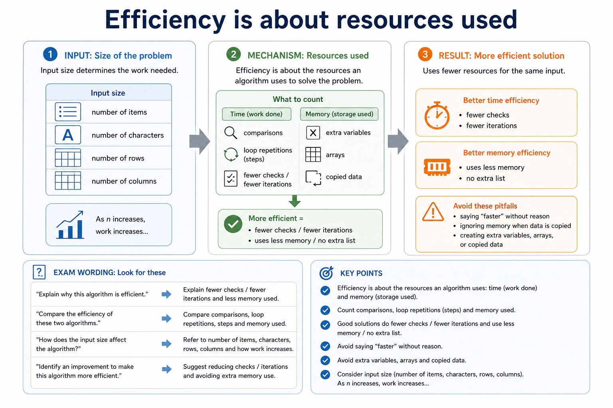
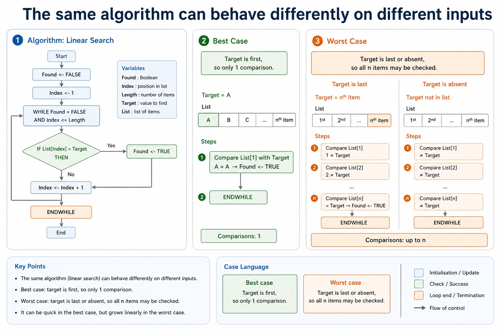
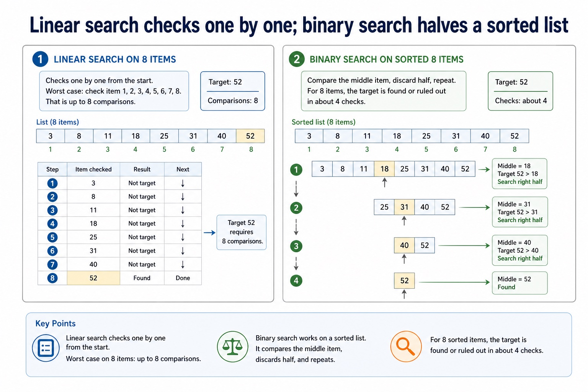
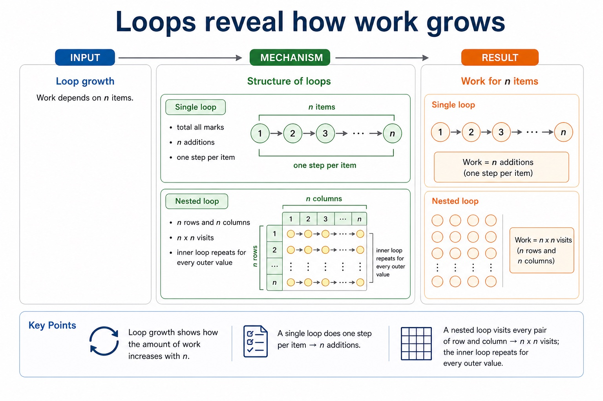
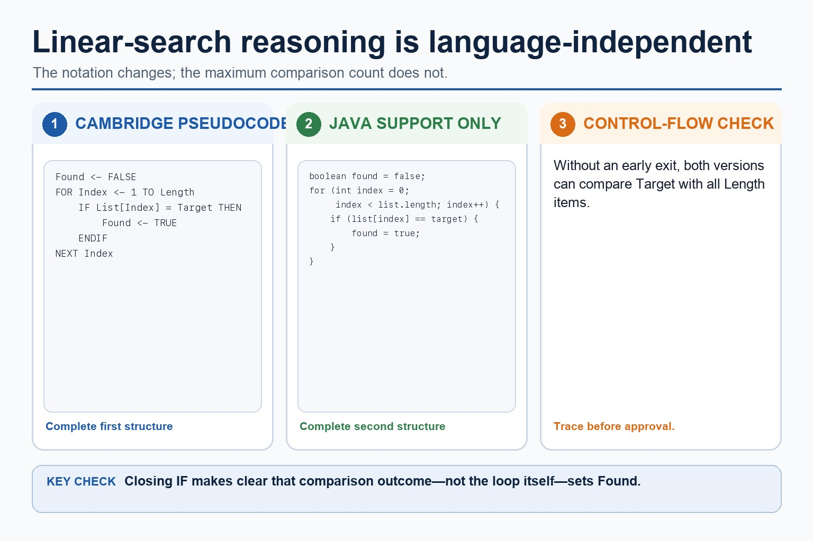
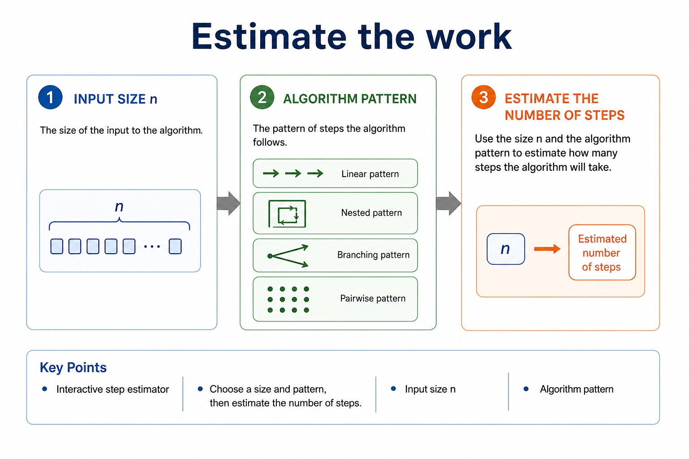

Algorithm efficiency at AS level means comparing how much work an algorithm does as the input size grows.
We mainly use step counts, comparisons, loop repetitions, memory used and best/worst case reasoning. You
do not need a university-level proof; you do need a precise explanation that matches the algorithm.
Measurecomparisons, loop repetitions, assignments and memory use
Comparelinear search, binary search, simple loops and nested loops
Explainbest case, worst case and input-size effects clearly
n = 8linear: up to 8 checksbinary: up to 4 checks
n = 64linear: up to 64 checksbinary: up to 7 checks
1 loop: n2 nested loops: n x nbinary search: repeatedly halve
The exam reward is usually the reason, not the slogan "more efficient".
Why this matters
Paper 2 may ask students to choose or justify an algorithm. Marks depend on linking the method to work done.
Common trap
Binary search is not automatically valid. It only works when the data is sorted and random/midpoint access is available.
Warm-up hook
Where would you search for page 512?
A book has 1000 numbered pages. You need page 512. Which strategy is usually more efficient?
Choose the strategy that reduces the remaining search space fastest.
Knowledge explanation
Efficiency is about resources used
Measure
What to count
Exam wording
Trap
Time
comparisons, loop repetitions, steps
fewer checks / fewer iterations
"faster" without reason
Space
extra variables, arrays, copied data
uses less memory / no extra list
ignoring memory when data is copied
Input size
number of items, characters, rows, columns
as n increases, work increases...
testing only one tiny example
Case
best, average or worst scenario
target at start / absent / middle
using best case as if always true
Chinese support: efficiency = 效率；time complexity idea = 随输入规模增长的运行时间；space = 额外内存。
Efficiency is about resources used

Efficiency is about resources used: source-grounded visual explanation.
Lesson fact: Knowledge explanation
Lesson fact: What to count
Lesson fact: Exam wording
Lesson fact: comparisons, loop repetitions, steps
Lesson fact: fewer checks / fewer iterations
Lesson fact: "faster" without reason
Lesson fact: extra variables, arrays, copied data
Lesson fact: uses less memory / no extra list
Lesson fact: ignoring memory when data is copied
Lesson fact: Input size
Lesson fact: number of items, characters, rows, columns
Lesson fact: as n increases, work increases...
Best and worst cases
The same algorithm can behave differently on different inputs
Linear search
Found <- FALSE
Index <- 1
WHILE Found = FALSE AND Index <= Length
IF List[Index] = Target THEN
Found <- TRUE
ELSE
Index <- Index + 1
ENDIF
ENDWHILE
Case language
Best case: target is first, so only 1 comparison. Worst case: target is last or absent, so all n items may be checked.
Do not say "linear search is always slow". It can be quick in the best case, but grows linearly in the worst case.
The same algorithm can behave differently on different inputs

The same algorithm can behave differently on different inputs: source-grounded visual explanation.
Lesson fact: Best and worst cases
Lesson fact: Linear search
Lesson fact: Found <- FALSE
Lesson fact: Index <- 1
Lesson fact: WHILE Found = FALSE AND Index <= Length
Lesson fact: IF List[Index] = Target THEN
Lesson fact: Found <- TRUE
Lesson fact: Index <- Index + 1
Lesson fact: ENDWHILE
Lesson fact: Case language
Lesson fact: Best case: target is first, so only 1 comparison. Worst case: target is last or absent, so all n items may be checked.
Lesson fact: Do not say "linear search is always slow". It can be quick in the best case, but grows linearly in the worst case.
Search comparison
Linear search checks one by one; binary search halves a sorted list
Linear search on 8 items
Worst case: check item 1, 2, 3, 4, 5, 6, 7, 8. That is up to 8 comparisons.
Compare the middle item, discard half, repeat. For 8 items, the target is found or ruled out in about 4 checks.
[3, 8, 11, 18, 25, 31, 40, 52]
middle 18 -> search right
middle 31 -> search right
middle 40 -> search right
middle 52 -> found
Linear search checks one by one; binary search halves a sorted list

Linear search checks one by one; binary search halves a sorted list: source-grounded visual explanation.
Lesson fact: Search comparison
Lesson fact: Linear search on 8 items
Lesson fact: Worst case: check item 1, 2, 3, 4, 5, 6, 7, 8. That is up to 8 comparisons.
Lesson fact: [3, 8, 11, 18, 25, 31, 40, 52]
Lesson fact: target 52 -> 8 comparisons
Lesson fact: Binary search on sorted 8 items
Lesson fact: Compare the middle item, discard half, repeat. For 8 items, the target is found or ruled out in about 4 checks.
Lesson fact: middle 18 -> search right
Lesson fact: middle 31 -> search right
Lesson fact: middle 40 -> search right
Lesson fact: middle 52 -> found
Loop growth
Loops reveal how work grows
Structure
Example
Work for n items
AS-level explanation
Single loop
total all marks
n additions
one step per item
Nested loop
n rows and n columns
n x n visits
inner loop repeats for every outer value
Halving
binary search
few comparisons
remaining search area is halved each time
Repeated passes
bubble sort
many comparisons
several passes through the list
Loops reveal how work grows

Loops reveal how work grows: source-grounded visual explanation.
Lesson fact: Loop growth
Lesson fact: Structure
Lesson fact: Work for n items
Lesson fact: AS-level explanation
Lesson fact: Single loop
Lesson fact: total all marks
Lesson fact: n additions
Lesson fact: one step per item
Lesson fact: Nested loop
Lesson fact: n rows and n columns
Lesson fact: n x n visits
Lesson fact: inner loop repeats for every outer value
Pseudocode vs Java
Efficiency explanations are language-independent
Cambridge-style reasoning
FOR Index <- 1 TO Length
IF List[Index] = Target THEN
Found <- TRUE
ENDIF
NEXT Index
This loop can perform up to `Length` comparisons.
Java support only
for (int index = 0; index < list.length; index++) {
if (list[index] == target) {
found = true;
}
}
Java syntax changes the notation, not the number of item comparisons.
Exam reminder: explain the algorithm's work, not the programming language's punctuation.
Efficiency explanations are language-independent

Efficiency explanations are language-independent: source-grounded visual explanation.
Lesson fact: Pseudocode vs Java
Lesson fact: Cambridge-style reasoning
Lesson fact: FOR Index <- 1 TO Length
Lesson fact: IF List[Index] = Target THEN
Lesson fact: Found <- TRUE
Lesson fact: NEXT Index
Lesson fact: This loop can perform up to Length comparisons.
Lesson fact: Java support only
Lesson fact: for (int index = 0; index < list.length; index++) {
Lesson fact: if (list[index] == target) {
Lesson fact: found = true;
Lesson fact: Java syntax changes the notation, not the number of item comparisons.
Interactive efficiency chooser
Choose the better explanation
Choose a scenario to see an efficiency explanation.
Interactive step estimator
Estimate the work
Choose a size and pattern, then estimate the number of steps.
Estimate the work

Estimate the work: source-grounded visual explanation.
Lesson fact: Interactive step estimator
Lesson fact: Input size n
Lesson fact: Algorithm pattern
Lesson fact: Choose a size and pattern, then estimate the number of steps.
Worked examples
Efficiency comparisons
Practice with instant checking
Efficiency language
Type concise answers. Use Show answer after committing to a response.
Mistake debugging
Fix vague efficiency claims
Exam-style questions
Original Cambridge-style efficiency questions with expandable MS
These questions target measurable comparisons, preconditions, best/worst cases and strict explanation wording.
Summary
Efficiency checklist
CountUse comparisons, loop iterations, passes or memory use, not just "fast".
ConditionState preconditions such as sorted data for binary search.
CaseSeparate best, worst and average cases when the algorithm behaves differently.
Homework
Clear tasks for consolidation
Task 1: Search comparisonFor a sorted list of 64 values, compare worst-case linear search and binary search using number of comparisons.Task 2: Loop countExplain how many times an inner statement runs in a nested loop with 12 rows and 5 columns.Task 3: Correction paragraphRewrite this vague claim with evidence: "Binary search is better because it is faster."